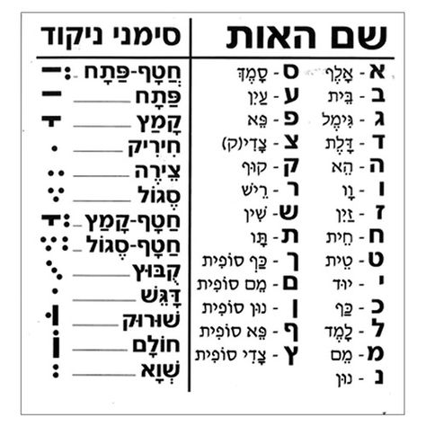

משה מוציא וכלב מכניס
אחרי אותיות משה - האות א' נשמעת (משה מוציא את האות א')
אחרי אותיות וכל"ב - האות א' אינה נשמעת (כלב מכניס את האות א')
דוגמאות: כאדוננו, לאלוקינו - האות א' לא נשמעת.
דוגמאות: מאלוקים, האל - האות א' אכן נשמעת.
ניקוד אותיות וכל"ב
1) ברירת המחדל היא שאותיות וכל"ב מנוקדות
בשווא למעט כמה יוצאי דופן.
2) כאשר אותיות וכל"ב לפני חטף, הם יקבלו את
ניקוד תנועת החטף.
3) אות וכל"ב לפני י' המנוקדת בשווא, תקבל
חיריק והוא י' לא תשמע.
| מספר הכלל |
האות ו' |
האותיות כל"ב |
| 4) |
לפני שווא, אותיות שפתיות (בומ"פ) ינוקדו בשורוק. |
לפני שווא, אותיות וכל"ב ינוקדו בחיריק. |
| 5) |
לפני הבהרה מותאמת, האות ו' תנוקד בקמץ. |
x |
מילות יחס
כלל: כיצד נדע מהי הצורה הנכונה של מילת היחס? נעביר לגוף ראשון ונבדוק.
אם האות האחת לפני אחרונה במשפט תנוקד בחיריק, נבחר בצורה הקצרה.
דוגמאות:
אותכם/אתכם, הופך ל -אותי. ולכן התשובה היא - אתכם.
אצלהם/אצלם, הופך ל - אצלי. ולכן התשובה תהיה - אצלם.
אם האות האחת לפני אחרונה במשפט תנוקד בקמץ, נבחר בצורה הקצרה.
דוגמאות:
בלעדם/בלעדיהם, הופך ל - בלעדי. ולכן התשובה היא - בלעדיהם.
בפנם/בפניהם, הופך ל - בפני. ולכן התשובה היא - בפניהם.
מילים נוספות
המילים - ממנו, איננו. האותיות ו' ינוקדו בשורוק.
המילה - איתך, האות ת' תנוקד בקמץ.
המילה - אצלכם, האות ל' תנוקד בצירה.
ניתן לומר עמם, עמהם, עמן, עמהן - הכול נכון.